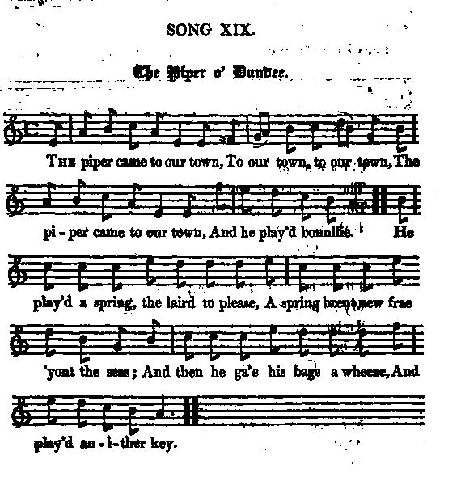
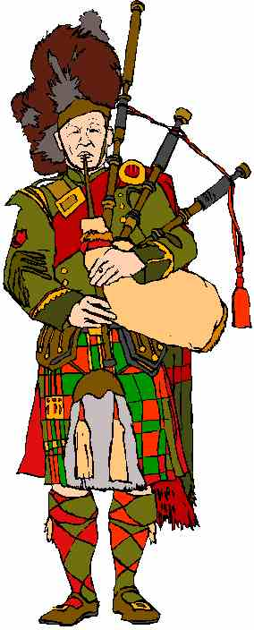

The Piper o' Dundee
Le sonneur de Dundee
Lyrics from James Hogg's "Jacobite Relics 2nd volume N°19
Tune - Mélodie "The Piper of Dundee" or "The Drummer(s)"English or Scottish reel published in Neil Stewart's Collection (1761)
Sequenced by Barry Taylor

|
To the tune:
Melody published -also under the title "the Drummer (s)",-: in Neil Stewart's Collection (1761), Gow's Repository (1802) and McDonald's Skye Collection (1887). It appears in the Bodleian Manuscript (Oxford) titled "A Collection of the Newest Country Dances Performed in Scotland written at Edinburgh by D.A. Young, W.M. 1740." The words are related to a nursery rhyme "Aikendrum": There lived a man in oor toon, In oor toon, in oor toon, There lived a man in oor toon, An' his name was Aiken Drum. and to a political song (ca 1715) published in James Hogg's "Jacobite Relics" Volume 2, N°7, 1821, with the chorus "Aikendrum, Aikendrum" but the tunes are different. Source "The Fiddler's Companion" (cf. Links). "The Bridegroom Wore a Rob Roy Kilt is another (nonsense) song composed of the titles of other songs including several Jacobite songs, in particular "The Piper of Dundee". |
 |
A propos de la mélodie:
Mélodie publiée - également sous le titre "Le(s) tambour(s)"-: dans le recueil de Neil Stewart (1761), dans le "Repository" de Gow (1802) et dans la "Skye collection" de McDonald (1887). Elle apparaît sur le "Bodleian Manuscrit" (Oxford) intitulé "Recueil des plus récentes contredanses jouées en Ecosse et transcrites à Edimbourg par D.A. Young, W.M. 1740". Les paroles rappellent celles d'une chanson de nourrice "Aikendrum": Il y avait dans notre ville, Notre ville, notre ville, Il y avait dans notre ville, Un nommé Aikendrum; et d'un chant politique (vers 1715) publié dans les "Reliques Jacobites" de Hogg, volume 2, N°7, 1821, dont le refrain est "Aikendrum", "Aikendrum", mais la mélodie différente Source "The Fiddler's Companion" (cf. Liens). "Le marié portait un kilt à la Rob Roy est un autre chant (absurde, celui-là) composé de titres de chansons dont certaines jacobites, en particulier "le Sonneur de Dundee". |

|
1. The piper came to our town,
To our town, to our town The piper came to our town And he played bonnielie He play'd a spring the laird to please A spring brent new from 'yont the seas And then he gae his bags a wheeze And played anither key Chorus And wasna he a rougey, a rougey, a rougey And wasna he a rougey, the piper o' Dundee 2. He play'd "The Welcome Ower the Main" And "Ye's Be Fou and I'se be Fain" And "Auld Stuart's Back Again" Wi' muckle mirth and glee He'd play'd "The Kirk" , he play'd "The Queer" "The Mullen Dhu" and "Chevalier" And "Lang Awa' But Welcome Here" Sae sweet, sae bonnielie Chorus 3. It's some gat swords and some gat nane And some were dancing mad their lane And mony a vow o' weir Was ta'en that night at Amulrie 
There was Tillibardine
, and
Burleigh
And Struan
,
Keith
and
Ogilvie
And brave Carnegie
, wha' but he,
The piper o' Dundee. |
1. Le sonneur vint en ville,
En ville, en ville, Le sonneur vint en ville; Ah, qu'il a bien joué! De ces gavottes de seigneurs Qui chez les Français font fureur, Et soudain redoublant d'ardeur, De ton il a changé. Refrain En voilà bien un bougre, un bougre, un bougre En voilà bien un bougre de sonneur de Dundee! 2. Il joua 'Sur l'océan reviens!', Et 'L'un est vide, l'autre plein', 'Les Stuarts reviennent demain', Plein d'entrain débridé! Il joua 'l'Eglise' et 'Le pamphlet (?)', 'Le Mullen Dhu' , le Chevalier , 'Il y a longtemps qu'on t'attendait' , Ah, qu'il a bien joué! Refrain 3. L'un tire l'épée, l'autre pas, Et le troisième esquisse un pas, Plus d'un veut partir au combat Ce soir en Amulrie
!
Nous avions Murray
et
Burleigh
Et Strowan
,
Keith
, et
Ogilvie
Et quant à Carnegie
, c'est lui
Le sonneur de Dundee! (Trad. Ch. Souchon (c) 2010) |
|
[1]
Carnegie of Phinaven
Sir Walter Scott, in a marginal note to this song suggests that the hero of it is the same with that of song 8 - vol.2 ( He winna be guidit by me ), namely the notable Carnegie of Phinaven [...] If it was he, he must at some period, have borne an active hand in exciting the chiefs to take arms, as the song manifestly describes a sly endeavour of his to ascertain the state of their feelings. Those mentioned as present were all leading men of the Jacobite faction. Almurie or Amblere where the meeting is described as having taken place is a remote and sequestered village in the interior of Perthshire. A great number of the common people appear to have been present. It was probably on the eve of one of their great annual fairs, still held on the first Wednesday of May. [2] However, the repertoire of the Piper seems to include one song pointing to the 1745 rising: -"Welcome over the Main", namely, "Welcome, Charlie, over the Main" , as far as the latter is not a 1715 song, modified in honour of Prince Charles. The other songs are pertaining to the 1715 rising, and, with one exception, rather easy to identify: -"Ye's be Fou and I'se be Fain" should be "Carl an' the King come" (last line but one:"I'll be fou, an thou'se be toom"- "fain"="glad", "toom"="empty"). -"Auld Stuart's back again": "The old Stuart's back again" . -"The Kirk": "Came Ye frae France" whose tune and part of the lyrics are borrowed from the nursery rhyme "Came ye by the kirk?" -"The Mullen Dhu ": a Gaelic song about "A grouse nesting in the Dark Mill..." that might allude to the intruder filling the throne of the Stuarts. -"The Chevalier": for instance, "The Chevalier's musterroll" . -"Lang away but welcome here": matches better such 1745 songs as "Welcome Royal Charlie" or "Oh, he's been long o'coming" (same tune), than the 1715 tune "Over the sea and far away". -"The Queer": the corresponding song was not found. It could be a song about "counterfeit money" (the modern offensive sense appears first as an adjective in 1922, as a noun in 1935), a church "choir" (Scots: quier) or a "quire" (a set of four pages for a book - L.quaterni) [3] The names mentioned in the song are puzzling, too: - Tullibardine : William Murray, Marquis of Tullibardine had been "out" and attainted in 1715, but he was one of the Eight men of Moidart and raised the Stuarts' standard at Glenfinnan in 1745; - Lord Balfour of Burleigh : was forfeited in 1715 for his support of the rising; - Alexander Robertson of Struan fought at Killiekrankie, called out his clan in 1715 and was present in Charles's army though his age precluded him from active campaigning. - George Keith , Earl Marischal took part in the rebellion of 1715. The tenth Earl Marischal was out in the '45 with his brother James. - Several representatives of the family Ogilvy of Airlie took part in both 1715 and 1745 risings and the 6th Earl, David was attainted in 1746, served in the French army until he returned in 1778. - Beside Carnegie of Phinaven addressed above, there was a Carnegie, 5th Earl of Ethie, who was forfeited on account of his support of the Stuarts in the 1745 rebellion. |
[1]
Carnegie of Phinaven
Walter Scott dans une note suggère que le héros de ce chant est le même que celui du chant n° 8 - vol.2 ( He winna be guidit by me ), à savoir le fameux Carnegie de Phinaven [...] Si c'est bien lui, il doit, à un moment ou un autre avoir activement contribué à inciter les chefs à prendre les armes, puisque le chant décrit le stratagème dont il usait pour sonder leurs sentiments. Ceux dont on signale la présence étaient tous des chefs de la faction Jacobite. Almurie ou Amblere où l'on nous apprend que la réunion a eu lieu est un village isolé au fin fond du Perthshire. Beaucoup de gens du peuple semblent avoir été présents. C'était certainement la veille d'une de ces grandes foires annuelles qui se tiennent encore le premier mercredi de mai. [2] Le répertoire du Sonneur semble comprendre un chant qui a trait au soulèvement de 1745: "Welcome over the Main" (Traverse l'océan) , s'il s'agit de "Welcome, Charlie, over the main", sauf à supposer que le nom "Charlie" ait été substitué à "Jamie" dans un chant de 1715. Les autres chants ont bien trait au soulèvement de 1715, et sont à une exception près, faciles à identifier: -"L'un est vide, l'autre plein": vraisemblablement "Carl an' the King come" (avant dernier vers: "I'll be fou, an thou'se be toom"- "fain"="content", "toom"="vide"). -"Les Stuarts reviennent demain": "The old Stuart's back again" . -"L'Eglise" (the Kirk): "Came Ye frae France" (la mélodie et une partie du texte sont utilisés dans ce chant satirique). -"The Mullen Dhu ": un chant gaélique -"un coq de bruyère a fait son nid dans le Moulin Noir..."- qui fait peut être allusion à l'intrus occupant le trône des Stuart). -"The Chevalier": peut-être, " le Rassemblement pour le Chevalier" . -"Lang away but welcome here": ressemble plus à "Welcome Royal Charlie" ou "Oh, he's been long o'coming" (même mélodie) qu'au chant de 1715, "Over the sea and far away". -"The Queer": le chant correspondant reste inconnu. "The Queer" peut signifier "La fausse monnaie", "Le chœur" ou "Le pamphlet" [3] Les noms cités dans la chanson sont aussi ambigus: - Tullibardine : William Murray, Marquis de Tullibardine s'était révolté en 1715 et déchu de ses droits, mais en 1745 c'est l'un des Huit de Moidart et c'est lui qui lève l'étendard à Glenfinnan. - Lord Balfour de Burleigh : fut déchu en 1715 pour sa participation au soulèvement. - Alexandre Robertson de Struan combattit à Killiecrankie, souleva son clan en 1715 et entra dans l'armée de Charlie bien que son âge ne lui permît plus d'y jouer un rôle actif. - George Keith , Comte Marischal, prit part aux événements de 1715, et le 10ème comte Marischal à ceux de 1745 ainsi que son frère James. - Plusieurs Ogilvy d'Airlie ont combattu dans les rangs Jacobites en 1715 et 1745. Le 6ème comte, David, fut déchu en 1746, servit dans l'armée française avant de rentrer en 1778. - Outre le Carnegie de Phinaven visé ci-dessus, il y eut un Carnegie, 5ème comte d'Ethie, qui subit la sanction habituelle pour son soutien aux Stuart en 1745. |